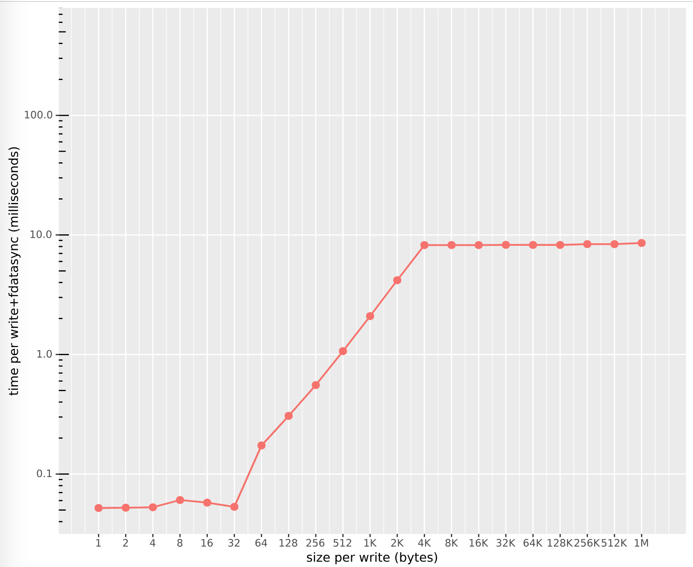

使用diskbenchmark测试硬盘性能。
本文使用的是Ubuntu服务器
无法在虚拟机上运行此工具
第1步：下载项目
git clone https://github.com/ongardie/diskbenchmark.git第2步：安装必要的软件包
sudo apt install -y gcc r-base-core r-cran-ggplot2 r-cran-plyr r-cran-scales第3步：编译项目
make bench第4步：benchmark配置文件
在machines目录下新建配置文件，比如machine-a：
disks="<硬盘名称>:<硬盘在/dev下的名称>:<测试文件写的目录>"
rootcmd () {
sudo $*
}
cmd () {
$*
}
sendfile () {
cp $1 ~/
}比如下面这样：
disks="mydisk:sda2:/tmp"
rootcmd () {
sudo $*
}
cmd () {
$*
}
sendfile () {
cp $1 ~/
}<硬盘在/dev下的名称>可以通过sudo fdisk -l得到。
第5步：执行
./runner.sh第6步：制作图表
压测需要很长时间，我所测试的硬盘配置如下的情况下，跑了大约2小时：
- 6 * 1.2TB 10K RPM SAS 12Gbps 512n 2.5英寸热插拔硬盘
- PERC H730P+ RAID 控制器, 2Gb NV 缓存
- RAID 5 开启回写，预读
完成后会得到results.csv文件。
使用如下命令制作图表，获得results.svg文件：
R -e "source('post.R'); ggsave('results.svg', g, width=10, height=7)"用浏览器打开：
